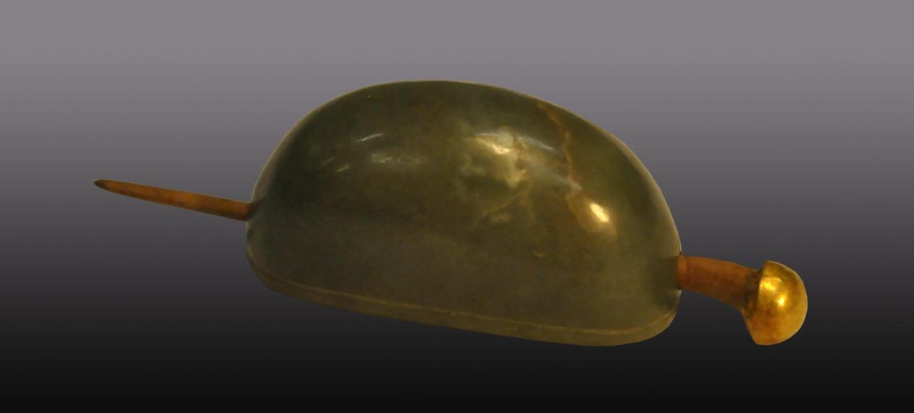

玉发冠，发冠主体为碧玉质，光素无纹，两侧有穿孔。簪为木质，包金蘑菇首。 发冠是古代成年男子所戴的束发用具。周代已有男子二十岁行冠礼的习俗，考古发现中迄今可见最早的玉质发冠则为宋代制品。玉发冠至明代十分流行，尺寸较之前代为小。明王圻《三才图会》云：“名曰‘束发’者，亦以仅能撮一髻 耳。”一般作半月形，中空，后部略高于前部。偶见玛瑙、琥珀质地，形式有五梁、七梁或无梁，大多无其余附饰，两侧和（或）前后各有一相对小孔，可对插发簪以束发。 玉发冠是明代贵族阶层流行的一种礼仪性饰物，可单独佩戴，也可再外戴乌纱帽。按明制，发冠上梁的多少代表着使用者的等级地位。明清商品经济繁荣，男性平民佩戴头饰日趋普遍，尤以单体玉簪或金簪常见，多做覆斗形或蘑菇形首， 此器之中的包金首木质者较为少见。